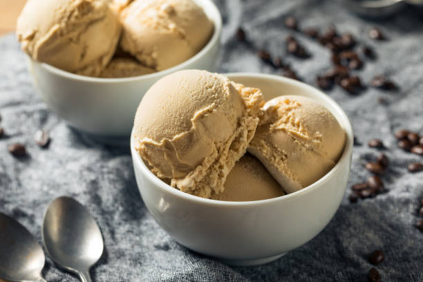

Home Made IceCream

Delicious and cold sugary desert for the hot summer nights.
Ingredients
- ¾ cup heavy whipping cream
- ¼ cup sweetened condensed milk
- 1 ½ teaspoons vanilla extract
- ⅛ teaspoon kosher salt
Equipment
- wide mouth mason jars
- spoons
Steps
- Place a 1-pint wide-mouth Mason jar in the freezer until chilled, about 5 minutes.
- Place cream, condensed milk, vanilla, and salt into the chilled jar.
- Beat with an electric hand mixer fitted with only one beater until thickened to the consistency of soft serve, 2 to 3 minutes, gradually increasing mixer speed from low to high.
- If desired, stir in any mix-ins with a long-handled spoon, making sure to leave at least 1/2 inch headspace
- Seal the jar and freeze until hardened, about 4 hours.